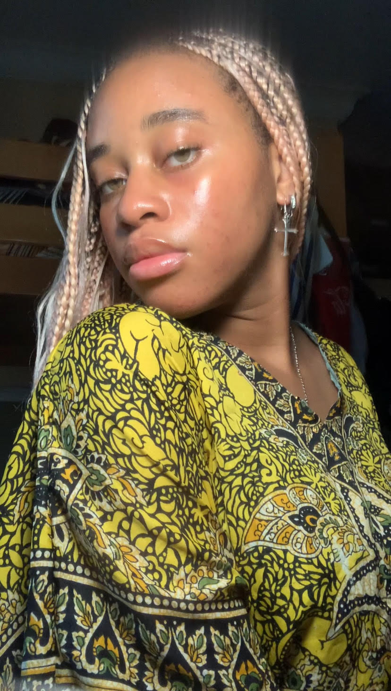
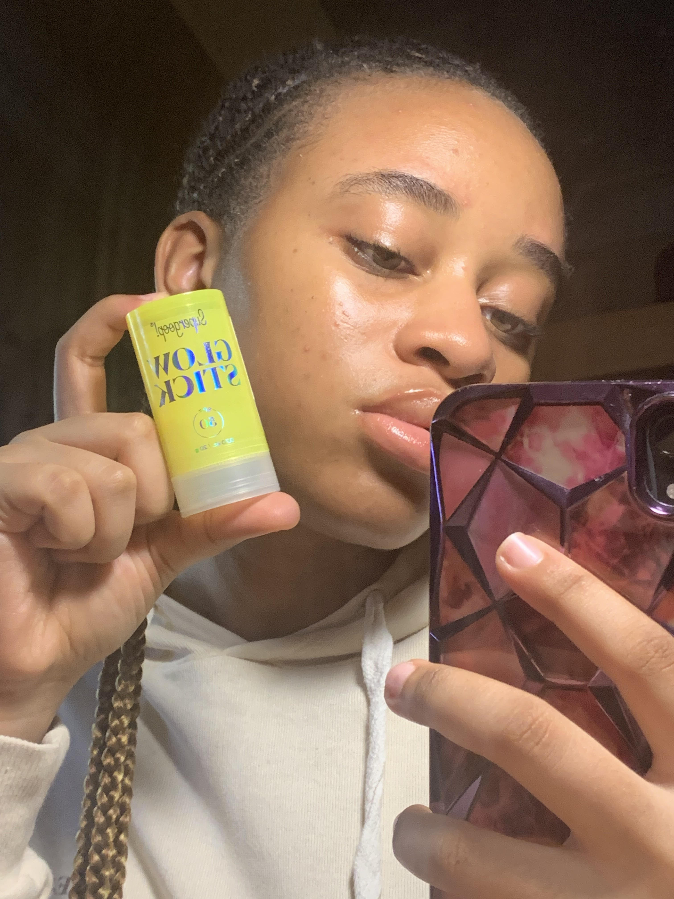
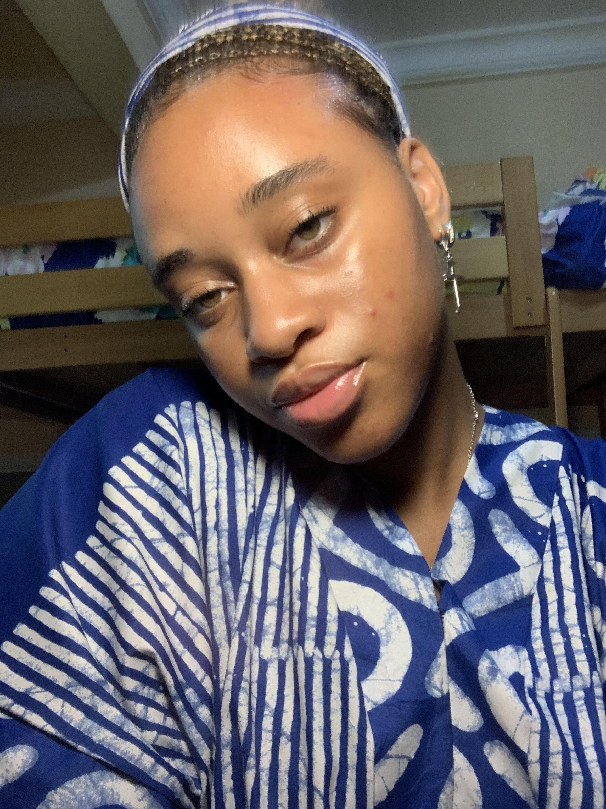
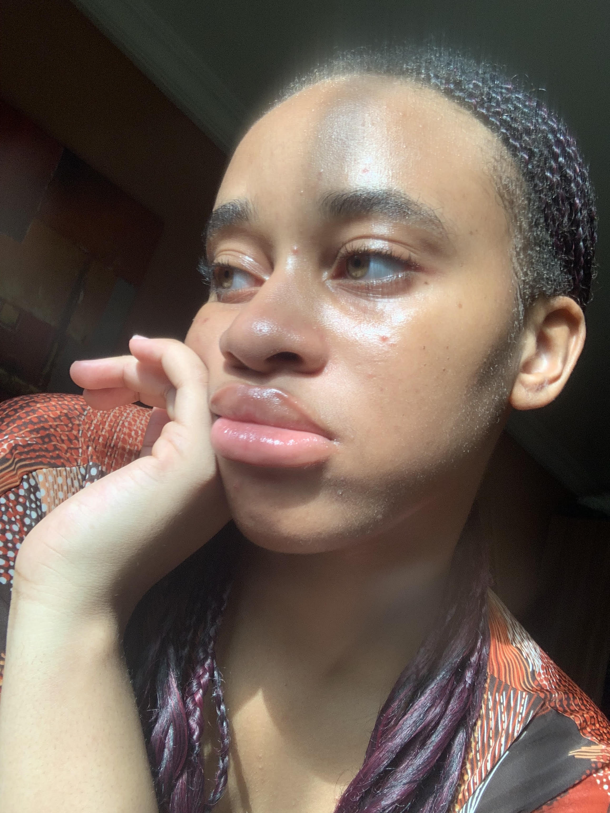
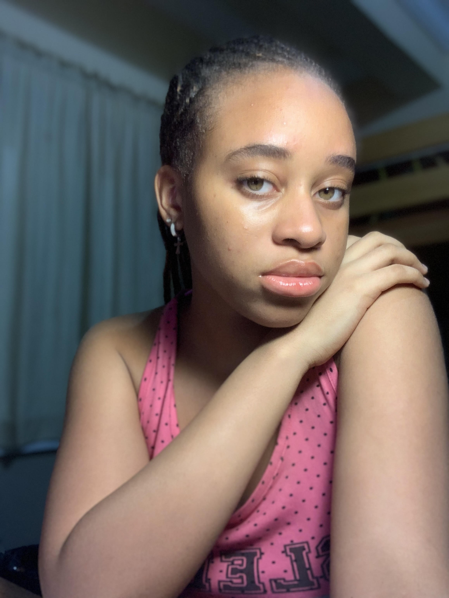

MY UGC PORTFOLIO
Projects


This is a photo from my skincare routine video I posted on TikTok. In the video, I discussed what it's like having oily skin, why, how, when I use my preferred skincare products and what has worked for me for my personal skin concerns.

This is a photo from an ad campaign I did with Sugergoop for their spf 50 Sunscreen Glow Stick. This photo showcases the product, the glowy and dewy look it gave my skin and how protective and pocket/bag-friendly it is!
This is photo from a brand photoshot for their new collection which included the white button-up shirt, black pants and black sunglasses. I was asked to do different poses and showcase all the items with the poses.

This is a photo from a collaboration with an online store that sells African fabric bubu dresses. The dress came with a matching head tie which I styled with my hair. I did different poses showcasing the head tie and fabric styles of the garments

This is a photo I took to showcase my skin to skincare brands looking to work with me. I took the photos under direct sunlight to shpw the true state and essence of my natural skin and skin type.

This photo is from an ad campaign with BIOAQUA which is a brand who sells face masks. This photo was taken after using the product to show how hydrated my skin looks after usage.